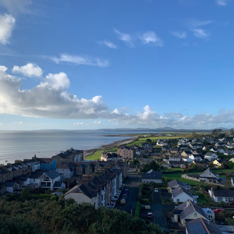

De Pátria para Pátria
Uma jornada épica do Kentucky ao Burundi pelo País de Gales e Ucrânia

Conheça um pouco mais sobre a localização dos seus amigos
Cada pessoa é um artista livre, chamado a transformar as condições, pensamentos e estruturas que moldam nossas vidas.
— Joseph Beuys
A cidade de TripleTen reuniu profissionais de diversos cantos do mundo. Hoje, a Galeria de Arte TripleTen tem o orgulho de apresentar histórias e fotos de algumas das pessoas que dedicam seu tempo e esforço para fazer com que os futuros profissionais de tecnologia desta cidade se sintam em casa. Cada um de nós tem uma história única sobre o lugar de onde viemos. Sinta-se à vontade para adicionar sua própria história e uma obra de arte visual dedicada à sua cidade natal à nossa coleção. Não importa de onde você é, estamos felizes por você ser nosso vizinho.


Criccieth, País de Gales
Compre esta obra de arte como NFT Artistas
Kseniya Glagoleva, gerente de projeto
Steffan Warren, editor-chefe
A ruína medieval do Castelo de Cricieth tem vista para a cidade abaixo de uma rocha que se projeta para o mar. Acredita-se que tenha sido construído por Llewelyn, o Grande, no século XIII. Cerca de 900 anos depois, a auto-intitulada *Pérola de Gales nas margens de Snowdonia* tornou-se um destino turístico popular durante os meses de verão.
A uma curta caminhada da estrada do castelo, você pode desfrutar do melhor sorvete do mundo no Cadwalader's, cujo ingrediente secreto, segundo rumores, são algas marinhas de origem local. Outra reivindicação à fama é o fato de que Criccieth ganhou o prêmio *Wales in Bloom* por cinco anos consecutivos por suas espetaculares exibições florais pela cidade. Foi também a casa de David Lloyd George, o único galês a ocupar o cargo de primeiro-ministro do Reino Unido.
Berea, EUA
Compre esta obra de arte como NFT
Artista
Travis Turner, autor e editor
Berea é uma pequena cidade localizada na parte central do Kentucky. A cidade é cercada por belas florestas e campos. É conhecida como a capital do artesanato do estado, e os visitantes encontrarão muitas oportunidades de compras: lojas com bijuterias artesanais, velas, artigos de madeira, galerias, ateliês de vidro e muito mais. A cidade realiza um festival anual que celebra o "pão de colher", um prato local feito com pão de milho e servido com uma colher de pau.
No entanto, provavelmente é mais conhecido pela faculdade local. O Berea College foi fundado em 1855 e foi o primeiro colégio no sul a ser racialmente integrado, bem como o primeiro a ser misto. De forma um tanto singular, não cobra mensalidades - todo aluno recebe uma bolsa de estudos integral.
Muramvya, Burundi
Compre esta obra de arte como NFT
Artista
Grevisse Kenguruka, editor técnico
Muramvya é uma das 18 províncias de Burundi. Na era do reino, Muramvya era a capital real e em 2007, por causa de sua paisagem cultural e natural, foi adicionada à Lista Provisória do Patrimônio Mundial da UNESCO. Está localizada no centro de Burundi, entre as capitais políticas e econômicas do país.
O Parque Nacional de Kibira, uma das maiores reservas de vida selvagem para macacos, se sobrepõe a quatro províncias, incluindo Muramvya. Este Parque Nacional encontra-se no ápice das belas montanhas do Congo-Nile Divide, variando entre 1.550 e 2.660 metros de altitude. Está repleta de uma bela vegetação e fonte para os vários rios e riachos que fornecem água em todo o país.
O clima é bastante frio à noite, mas durante o dia, você pensaria que está no céu. A 2.665 metros (8.743 pés) acima do nível do mar, o Monte Teza é um dos lugares mais frios da província. Mas essa brisa fresca permite uma das maiores plantações de chá e café do país, que representam a maior parte das exportações do Burundi.
São Paulo, Brasil
Compre esta obra de arte como NFT
Artistas
Phellippe Fernandes, Desenvolvedor Web FullStack e estudante em Eng. de Software
Fundada oficialmente em 25 de janeiro de 1554, a cidade de São Paulo é a capital do estado de São Paulo e se estende por uma área de aproximadamente 1.521 km². Com uma população de cerca de 12,3 milhões de habitantes, segundo estimativas do IBGE de 2023, São Paulo é a cidade mais populosa do Brasil e uma das maiores metrópoles do mundo. Esta cidade, que começou como um pequeno povoado de missionários jesuítas, tornou-se ao longo dos séculos o principal centro financeiro, corporativo e mercantil da América Latina.
Ao longo de sua história, São Paulo foi marcada pela imigração de diversas etnias, que contribuíram para a riqueza cultural e a diversidade que caracterizam a cidade hoje. Desde os tempos coloniais, passando pelo ciclo do café no século XIX e a industrialização do século XX, São Paulo evoluiu de uma vila agrícola para uma metrópole moderna, repleta de arranha-céus, museus, teatros e uma vida noturna vibrante.